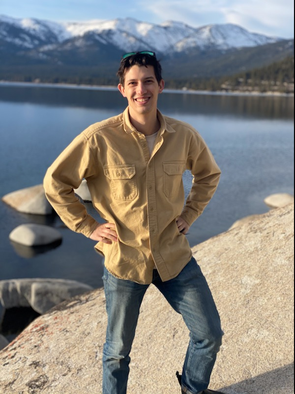

Radar observations of changing terrain
I use interferometric synthetic aperture radar (InSAR) and feature tracking to measure mountain surface movement, including rock glacier motion and moraine dam degradation.
Measuring change in mountain landscapes.
I use radar remote sensing and machine learning to study surface movement, snow depth, and geohazards in mountain environments.


I’m a Gordon and Betty Moore Foundation Postdoctoral Fellow and a UW Data Science Postdoctoral Fellow at the University of Washington, working with David Shean and Scott Henderson.
I earned my Ph.D. in Civil and Environmental Engineering at UW in 2025, where my dissertation focused on improving synthetic aperture radar measurements of surface movement and snow depth in mountain environments. I received my B.A. in Geology and Biology from Middlebury College in 2020.
Alongside my academic work, this site brings together my cartography and mountain photography.
I use interferometric synthetic aperture radar (InSAR) and feature tracking to measure mountain surface movement, including rock glacier motion and moraine dam degradation.
My work combines remote sensing observations and convolutional neural networks to improve snow depth estimates across the western United States.
I study glacial lake and moraine dam change in Nepal and develop methods to reduce atmospheric noise in mountain InSAR observations.
deep-snow · fufiters · indennt · spicy-snow · finn
Brencher, G., Henderson, S. T., & Shean, D. E. (2026). Quantifying degradation of the Imja Lake moraine dam with fused InSAR and SAR feature tracking time series. The Cryosphere, 20(1), 67–86.
Brencher, G., Henderson, S. T., & Shean, D. E. (2025). Removing atmospheric noise from InSAR interferograms in mountainous regions with a convolutional neural network. Computers & Geosciences, 194, 105771.
Hoppinen, Z., Palomaki, R. T., Brencher, G., Dunmire, D., Gagliano, E., Marziliano, A., … & Marshall, H. P. (2024). Evaluating snow depth retrievals from Sentinel-1 volume scattering over NASA SnowEx sites. The Cryosphere, 18(11), 5407–5430.
Morriss, M., Lehmann, B., Campforts, B., Brencher, G., Rick, B., Anderson, L., … & Moore, J. (2023). Alpine hillslope failure in the western US: insights from the Chaos Canyon landslide, Rocky Mountain National Park, USA. Earth Surface Dynamics, 11(6), 1251–1274.
Brencher, G., Handwerger, A. L., & Munroe, J. S. (2021). InSAR-based characterization of rock glacier movement in the Uinta Mountains, Utah, USA. The Cryosphere, 15(10), 4823–4844.
Munroe, J. S., & Brencher, G. (2019). Holocene carbon burial in lakes of the Uinta Mountains, Utah, USA. Quaternary, 2(1), 13.
Brencher, G., Gagliano, E., Henderson, S. T., & Shean, D. E. (2026). Improving snow depth estimates over the Western United States with convolutional neural networks for data fusion. Manuscript under review at Remote Sensing of Environment.
Brencher, G., Handwerger, A. L., Anderson, R., & Shean, D. E. (2026). Rock glacier velocity and thickness from high-resolution, multi-geometry UAVSAR InSAR in the Colorado Rocky Mountains. Manuscript in preparation.
Brencher, G., Henderson, S. T., & Shean, D. E. (2026). Mapping buried ice and quantifying degradation rates for the most dangerous moraine dams in Nepal using Sentinel-1 InSAR. Manuscript in preparation.
Geohazard Rapid Investigation Team (GRIT): Rasuwa. (2026). Learning from disaster: the August 2026 rock-ice avalanche and flood in Rasuwa, Nepal. Manuscript in preparation.
Instructor of record for a combined graduate and undergraduate course with 19 students. Previously a teaching assistant in 2024 and 2025, and a contributor to course development.
Led a research project with eight undergraduates evaluating the first NISAR glacier velocity measurements of the Juneau Icefield; taught remote sensing lectures to 31 students and led small-group technical workshops.
I mentor two Juneau Icefield Research Program students continuing their analysis toward an AGU presentation. I have led GitHub Actions tutorials at SciPy and US-RSE and projects at NASA Earth Sciences / UW and GeoSmart hackweeks.
Maps, with room for the ideas and decisions behind them.
Selected maps and project notes will appear here.
Selected maps and project notes will appear here.
A collection of your photographs, with space for place and perspective.
Mountain photography · Collection forthcoming
Mountain photography · Collection forthcoming
Rock glacier inventory from Brencher et al. (2021) featured in the atlas by J. Waterman.
Education, appointments, publications, teaching, funding, and service.
Updated October 19, 2026.
gbrench@uw.edu
University of Washington · Seattle, Washington